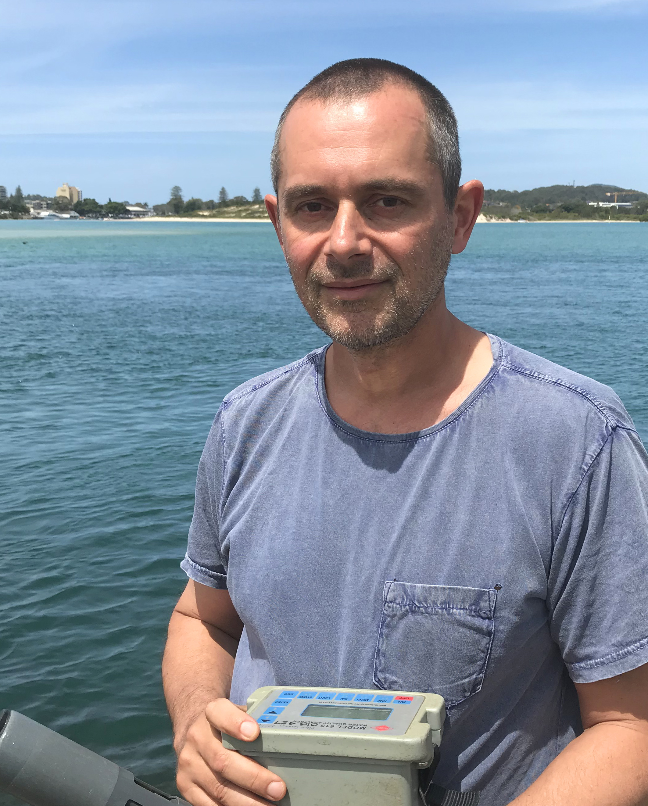
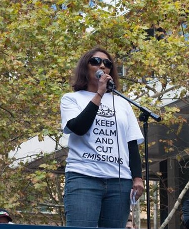
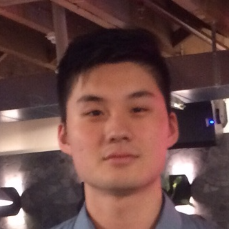

Alex is a climate scientist at the Climate Change Research Centre at UNSW Sydney. Most of his work is aimed at understanding how the ocean affects the climate system and how climate change will affect the ocean and the critters living in the ocean. As the planet and the oceans are warming, we are seeing more extreme marine heatwaves, changes in ocean currents, poleward shifts in the location of marine species towards the cooler areas and devastating mass coral bleaching events. Climate models are the best tools we have to predict how these and other factors will change in the future, and provide clues around how we can mitigate or adapt to these changes.

Angela is a lecturer in the Climate Change Research Centre, UNSW Sydney. Her job includes a wide variety of activities from trying to understand the role of the ocean in climate variability, university learning and teaching and STEM outreach engagement around meteorology, oceanography and climate science. She is passionate about science literacy and is involved in several initiatives which aim to improve links between schools, universities and science research. Angela believes that STEM knowledge and skills, along with a healthy dose of curiosity and critical thinking will help future generations deal with complex issues like climate change.
Danny is a computer scientist and a member of the Computational Modelling Services team (CMS) based at the Climate Change Research Centre, UNSW Sydney. He is involved in web development and land surface model support at the ARC Centre of Excellence for Climate Extremes. A current focus is the ModelEvaluation.Org project - a website which will enable model evaluation and benchmarking.

Michael developed the initial codebase for Carbonator as part of a summer research program for the ARCCSS and CCRC, whilst completing his Bachelor of Computer Science at UNSW. He now works as a front-end engineer at one of Australia's most prominent startups, Canva.
Visual Metrics is a digital strategy, design and technology consulting firm that creates beautiful design solutions to explain complex ideas, digitise processes and assist with highly specialised marketing. They have separate suites of solutions which are geared towards helping leaders in Marketing, Human Resources, Operations and Digital Transformation, better understand, reach and engage with their Stakeholders, Industry and Customers.